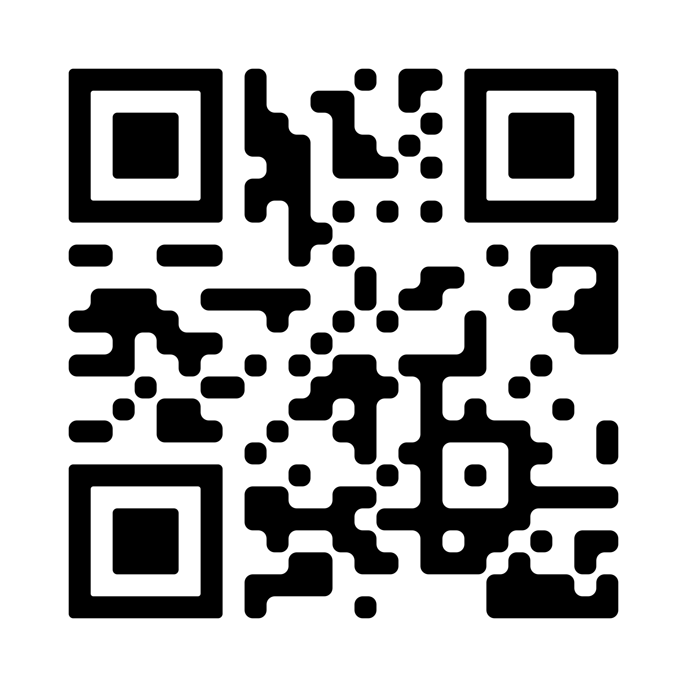

Separação Correta dos Recicláveis
Veja como separar corretamente os resíduos:
- Papel: jornais, caixas, folhas secas.
- Plástico: garrafas, sacolas limpas.
- Metal: latas, tampinhas, alumínio.
- Vidro: garrafas e potes sem restos.
Pontos de Coleta
- ♻️ Be-e Collect Av. Pref. Mário de Menezes, 737 - 43 99170-1392
- ♻️ Recicle Agora Ibiporã Av. Santos Dumont, 565 - 43 3379-7700
- ♻️ Associação dos Catadores Rua Monjoinho, 55 - 43 3258-1714
- ♻️ Supermercado Bom Preço Av. dos Estudantes, 1365 - 43 3258-1365
🏆 Ranking VerdeConecta
Os moradores mais engajados na separação correta do lixo enviam fotos via app. Os dados são atualizados automaticamente.
- Maria da Silva – 12 fotos
- Lucas Pereira – 10 fotos
- Ana Costa – 9 fotos
- Cleber Alves – 6 fotos
- João Alves – 3 fotos *Ranking baseado em fotos aprovadas pelo app*
📲 Baixe o App
Disponível para Android e iOS. Aponte sua câmera para o QR Code:
